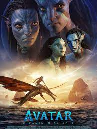

livro
Inicio
velozes e furiosos 10

A trama de Velozes e Furiosos acompanha Brian O' Connor, um policial que se infiltra nas corridas de carro ilegais para prender o criminoso Dominic Toretto. Suas ações, no entanto, mudam de direção quando ele se apaixona pela irmã de Dominic, pelas corridas e pelo grupo de amigos que faz.
classificação: 14 anos
data de lançamento: 2023
Avatar

No exuberante mundo alienígena de Pandora vivem os Na'vi, seres que parecem ser primitivos, mas são altamente evoluídos. Como o ambiente do planeta é tóxico, foram criados os avatares, corpos biológicos controlados pela mente humana que se movimentam livremente em Pandora. Jake Sully, um ex-fuzileiro naval paralítico, volta a andar através de um avatar e se apaixona por uma Na'vi. Esta paixão leva Jake a lutar pela sobrevivência de Pandora.
classificação: 12 anos
data de lançamento: 2023
gato de botas

O Gato de Botas descobre que sua paixão pela aventura cobrou seu preço: ele já gastou oito de suas nove vidas. Ele então parte em uma jornada épica para encontrar o mítico Último Desejo e restaurar suas nove vidas.
classificação: livre
data lançamento: 2023
fim
-----